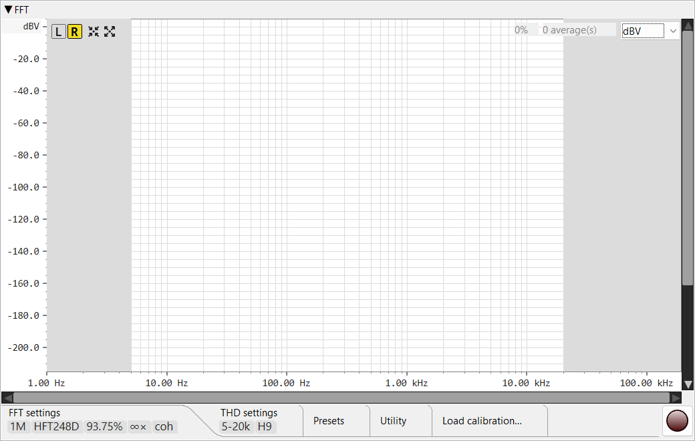

This page covers the FFT analyser's controls. For how it measures — coherent averaging far below the noise floor, sub-bin frequency alignment, THD / SNR / ENOB — see Theory of operation ▸ FFT analyser.
Real-time spectrum + harmonic-distortion / noise-floor measurements. The analyser reads samples from the same shared capture buffer the oscilloscope uses; pressing the FFT's red record button doesn't change the scope's recording state. Analysis cadence scales with overlap — at 87.5 % overlap the spectrum refreshes ~8× per FFT window.

L /
R channel pick, Auto-Setup,
Maximise, the
distortion-table toggle,
reset-averaging and the
external-window toggle.» when more exist than
fit). At the time of writing:
FFT settings,
THD settings,
Presets,
Utility,
Load calibration…,
Save to… and
Load from…. Key values show as
tiles while a tab body is collapsed;
double-click the strip to expand or collapse it.Row of square buttons at the top-left of the spectrum canvas.
Toggle buttons that pick which channel feeds the analyser. The selected channel's button takes a coloured background. Switching the channel resets the averaging buffer (see Reset) so the new channel's spectrum starts clean.
Frames the spectrum around the detected fundamental: frequency range ±1 decade, magnitude top = fundamental + 10 dB, bottom = noise floor − 20 dB. Requires at least one published analysis.
The inverse of Auto-Setup: sets the widest sensible view — frequency 0 .. Nyquist. The magnitude range is signal-independent only when there is no current analysis (top +20 dB, a fixed default bottom). Once a spectrum has been measured the range follows the signal: top = fundamental + 20 dB (never below +20 dB) and bottom = noise floor − 30 dB.
Shows / hides the THD info table overlay in the top-left of the canvas. The button itself appears only after the first analysis is published — there is nothing to show before then. When the table is extracted to the external window (see below) this toggle still works — it controls whether the table is visible at all.
Red counterclockwise-arrow button (a "roll back to the start" reset). Wipes the averaging buffer + retained spectrum and rearms the gauge. The next analysis starts from zero — and clamps to fresh samples only, so old pre-reset audio doesn't bleed into the new average.
Pops the THD info table out into a separate tool window so it can sit alongside the spectrum without occupying canvas space. Closing the tool window returns the table to the main view.
Polyline of the FFT magnitude across the visible frequency range. Trace colour, line width, and chart background are configurable in Preferences → FFT. At high zoom levels the trace stays continuous: per-pixel envelopes collapse multiple bins into one vertical line, with adjacent known columns connected by a polyline segment.
Red dots painted at the detected fundamental and harmonic frequencies. Their diameter is configurable. When the manual-fundamental override is enabled, only the fundamental dot lifts to the override value; the rest stay on the de-embedded / calibrated dBV scale.
Light-grey overlay covering frequencies outside the active distortion HP / distortion LP window. Shows at a glance which bands are excluded from the SNR / THD+N integration.
Hovering shows a dashed grey cross at the pointer. The floating readout
near the cursor lists the frequency (f = …), the magnitude at
the cursor's height on the vertical axis (y = …), and the
magnitude of the nearest spectrum bin in the active unit
(|m| = …). The
readout is hidden while the pointer is over a header button or over the
fill-percent / averages / magnitude-unit fields.
Pans the visible frequency range — left / right only. A scrollbar never zooms; the thumb is sized by the view (its width reflects the visible fraction of the full range) and tracks zoom automatically, but dragging it only pans. Click the empty track to page toward the pointer; hold the button down and the page-steps repeat until the thumb reaches the cursor. To zoom, use the mouse wheel over the canvas (wheel / Shift+wheel pan, Ctrl+wheel / Ctrl+Shift+wheel zoom).
The same, for the magnitude axis: it pans up / down only and its thumb tracks the magnitude zoom. Ctrl+wheel inside the canvas zooms the magnitude axis around the cursor and the scrollbar's thumb updates to match.
Compact overlay in the top-left of the canvas (or in the external tool window when extracted). All values use the current magnitude unit. Hidden by the distortion-table toggle.
Bold first row: fundamental frequency (4-decimal Hz), dBFS, dBV. The dBV
column shows, in order of precedence: the manual
override if set; otherwise the de-embedded (calibration-corrected)
value when a calibration is loaded;
otherwise the plain ADC-calibrated value. In dual-tone mode the header is
two rows — F1: and F2: — one per tone.
Span: 900 .. 9500 Hz — the band over which SNR /
THD+N integrate. Span: full when both distortion
bounds are disabled.
ΔF: +0.001 Hz (+0.97 ppm) Δosc: +23.79 Hz @ 24.576 MHz.
Shows the measured fundamental's deviation from the value the generator
was told to play — both in absolute Hz and ppm, and translated back to the
master oscillator if the sample rate is a recognised 44.1 / 48 kHz family.
Only the fundamental tone carries a ppm figure (harmonics never do); in
dual-tone mode there are two rows, Δf1 and Δf2,
one per tone. Visible only when
"Get fundamental from generator" is on AND
the generator is actually running.
Total non-fundamental power, A-weighted. The "A" suffix flags the A-weighting.
Noise power with the detected harmonics removed from the band.
Signal-to-noise ratio in dB. Defined against the noise-only band (above).
Total harmonic distortion as a percentage of the fundamental, summed over harmonics 2 through N (where N = Max harmonic for THD).
Total harmonic distortion + noise. Same numerator as N+D, normalised to the fundamental.
Effective number of bits = (SINAD − 1.76) / 6.02. Reflects the ADC + capture chain's combined dynamic range.
Two harmonics per row. Each entry shows the harmonic's dBV level and its percentage of the fundamental. Number of rows is governed by Max harmonic to calculate.
Small percentage label (e.g. 100%) showing how
much of the next FFT window has accumulated since the previous
analysis. Reaches 100 % at the moment the analyser fires.
e.g. 32 average(s). Number of frames currently
contributing to the displayed average. Caps at the configured
Averages in fixed-window mode;
keeps climbing in "forever" mode.
Combo at the top-right with four choices:
V, V/√Hz, dBV, dBFS.
Switching unit converts the axis labels and scrollbar bounds in
place — the visible signal stays at the same screen Y.
Red round toggle, anchored to the right end of the toolbar row. Pressing it acquires a reference on the shared capture device and starts the FFT worker. The scope's record state is independent — both panes can record together. The button stays visible even when the toolbar tabs are collapsed.
Power-of-two combo from 8 k to 4 M. Bigger windows give finer bin resolution but slower update rate and more memory. 1 M at 384 kHz gives ~0.37 Hz/bin.
Combo of analysis windows, each trading main-lobe width against side-lobe level: Rectangular, Hann, Blackman-Harris 4-term and 7-term, Flat-top, the Heinzel flat-top family HFT144D / HFT248D, the Kaiser-Bessel KB24 / KB38, and the Dolph-Chebyshev DC150 / DC200 / DC250 / DC300 (the number is the side-lobe attenuation in dB). Use Hann or a Blackman-Harris for general work; a Flat-top / HFT for accurate amplitude readout of an isolated tone; a high Dolph-Chebyshev (DC250 / DC300) for very deep side-lobe suppression.
0 %, 50 %, 75 %, 87.5 %, 93.75 %. Successive analysis windows share that fraction of their samples. Overlap does two things: it raises the update rate (more spectra per second), and — with a tapering window — it makes effective use of all the captured input power, since the samples a window attenuates near its edges are weighted fully by the next, overlapped window. Higher overlap costs more CPU; 87.5 % is a common sweet spot. See Theory ▸ FFT analyser.
Step selector — 2, 4, 8, 16, 32, 64, 128, ∞ (forever). Number of overlapped frames averaged per published spectrum. Higher values reduce noise variance but slow response. "Forever" accumulates indefinitely — combine with Stop after to cap.
Checkbox + numeric field. When the checkbox is on, the analyser pauses after N analyses (Forever averages mode only). Reset re-arms it.
When on, the analyser locks onto the generator's current frequency instead of auto-detecting the loudest peak. Lets you measure deeply notched fundamentals where a louder mains spur would otherwise win the detection, and it is what enables the clock-difference (ppm) row. Automatically ignored when the generator isn't running. See Theory ▸ FFT analyser.
Combo — None or IIR comb. The comb pre-filters the captured signal before averaging with a frequency-tracked IIR comb locked to the live mains frequency, pulling down the mains line and all its harmonics (50 / 100 / 150 … Hz, or 60 / 120 / 180 … Hz).
Use it with care. Because the comb notches every mains harmonic, a measurement tone that lands on one of them — a round 1000 Hz is the 20th harmonic of 50 Hz — gets attenuated along with the hum. When you drive a tone, nudge it off the grid (1005 Hz instead of 1000 Hz, say) so the comb can clean the mains without touching your signal or its harmonics.
Frequency axis switches between log and linear. Log is traditional for audio (constant pixel-per-octave); linear is useful for spotting evenly-spaced spurs.

Sets the lower bound of the band used for SNR / N+D integration. Below this frequency, noise and spurs are excluded — useful for ignoring mains hum and DC-near artifacts.
Same, for the upper bound. Excludes high-frequency noise above the band of interest (e.g. above 20 kHz for audio).
When on, the analyser treats this value as the fundamental's dBV instead of using the de-embedded value or the one from the calibrated ADC. The chart's fundamental dot and the THD-table header dBV column shift to this value; other bins and the harmonic-row dBV values stay on the de-embedded value or the calibrated scale. Useful when an external twin-T notch attenuates the fundamental but you know its true level — for why this stabilises THD on a drifting notch, see Theory ▸ pinning the fundamental by hand.
Numeric (2 .. 9). Upper bound of the harmonics summed into the THD ratio. THD H2..N uses harmonics 2 through this number.
Numeric (≥ Max harmonic for THD). How many harmonics to detect and list in the harmonic rows — independent of how many feed the THD ratio.
Checkbox. When on, complex spectra are averaged (so random- phase noise cancels across frames, lowering the noise floor ~3 dB per doubling of frame count). When off, power spectra are averaged (noise variance reduces but the floor doesn't drop). Coherent requires phase-stable signals — sweeps and impulse responses are better measured with power averaging.

Named snapshots of the analyser's configuration. Type a name in the combo and press Save to store the current FFT and THD settings together with the channel, magnitude unit, the frequency / magnitude axis ranges and the log/linear flag; pick a saved name and press Load to restore them, or Delete to remove it (with a confirmation).

Renders the FFT pane to a PNG at a chosen resolution. The pane is laid out off-screen at the target size, so the image is a true layout rather than a scaled-up bitmap.
Opens the ADC calibration dialog (the same one reached from the scope) to anchor the dBV / V scale against a known input level.

Loads one or more frequency-response calibration files
(.frc, produced by the Frequency response module —
see Theory ▸ Frequency response) and
de-embeds them from the spectrum at display time — so the readout
reflects the device under test, not the measurement chain (a 1 kHz
twin-T notch, an attenuator, the soundcard's own roll-off).
Each calibration is a row; the + button adds another row and they compose in order. From the second row on, each row also carries a delete-row button to drop just that row.
.frc. The clear (×) button unloads the row's
file without removing the row.The correction is applied to the displayed curve only; the averaging accumulator stays raw. Each peak is drawn twice — a red dot on the corrected level and a blue dot where the ADC saw it before correction — and the THD table follows the corrected (red) values.

Writes the current spectrum to a .fft file. The path field is
read-only; a single Save button opens the file dialog (there is no
separate browse). The spectrum is stored with its de-embedded
harmonics, and the file header records the full configuration the analysis
ran with — FFT length, sample rate, window, averaging mode and count,
channel, the distortion band, manual fundamental, calibration and (in
dual-tone mode) the two tone frequencies — so a saved measurement is
self-describing.

Reads a previously-saved .fft file and renders it as a static
spectrum overlay — useful for comparing measurements taken at different
times or under different conditions. A loaded spectrum is shown exactly as
it was saved: the current de-embedding and manual-fundamental settings are
not re-applied to it (the saved curve already carries its own).
Only three tabs carry tiles — FFT settings, THD settings and Load calibration; they show the small pill-shaped badges under the tab label that summarise the tab's main controls. Presets, Utility, Save and Load have none. Tiles are passive; hover one for a tooltip describing the value.
Short form on the FFT settings tab — e.g. 1M,
64k.
The window's short code — not a fixed length. One of
RECT, HANN, BH4, BH7,
FT, HFT144D, HFT248D,
KB24, KB38, DC150,
DC200, DC250, DC300.
Percentage (87.5%).
Number with × suffix (32×) or ∞ in
forever mode.
coh when coherent averaging is on,
inc when incoherent.
On the THD settings tab. Shows the SNR / N+D integration band:
both bounds active → 50-20k; HP only (no LP) →
50-∞; LP only (no HP) → 0-20k; neither set →
all.
H9 — the max harmonic for the THD ratio.
manF. Visible only when the manual-fundamental
override is enabled.